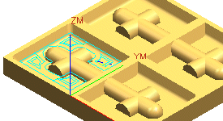
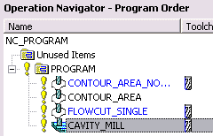

Specify a more efficient cut order
In this case, it would be more efficient to completely finish machining each region from top to bottom before traversing to the next region. To do this, you will change the cut order.
-
In the Cavity Mill dialog box, in the Path Settings group, click Cutting Parameters
 .
.
-
In the Cutting Parameters dialog box, in the Cutting group, from the Cut Order list, select Depth First.
This option cuts each pocket that it encounters to full depth.
-
Click OK.
-
In the Cavity Mill dialog box, in the Actions group, click Generate
 .
.
Notice that the tool path completely machines each region from the top to the bottom before traversing to the next region.

-
Click OK several times until you return to the Cavity Mill dialog box.
-
Click OK to complete the operation.
Notice that the operation is at the end of the program.
